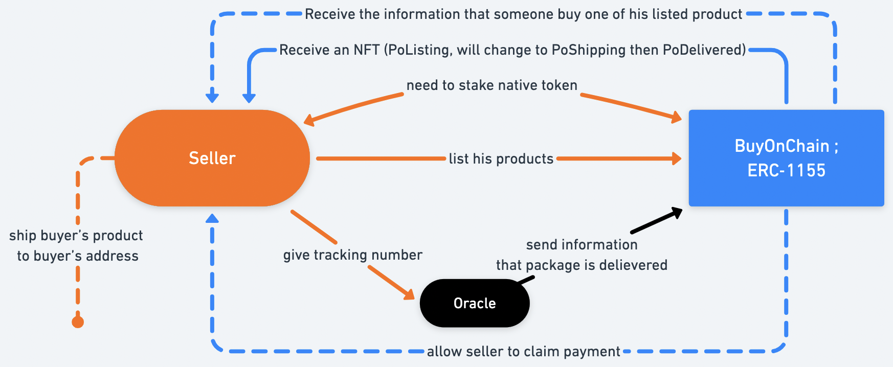
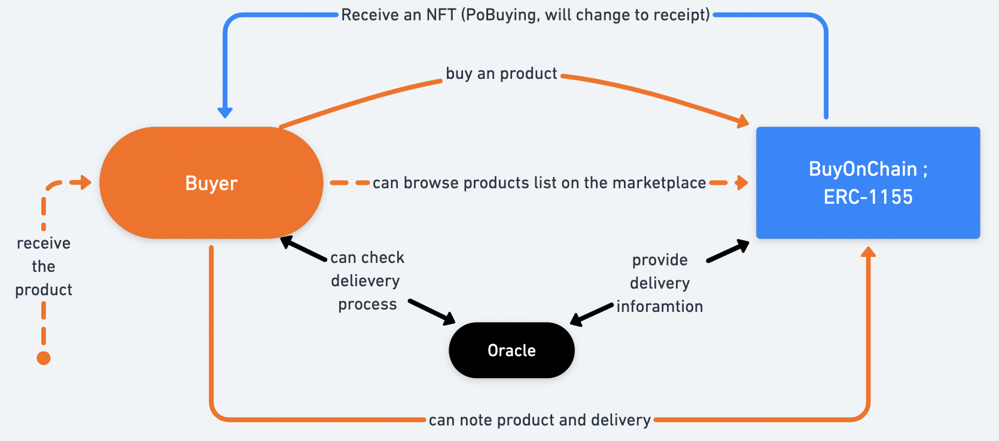
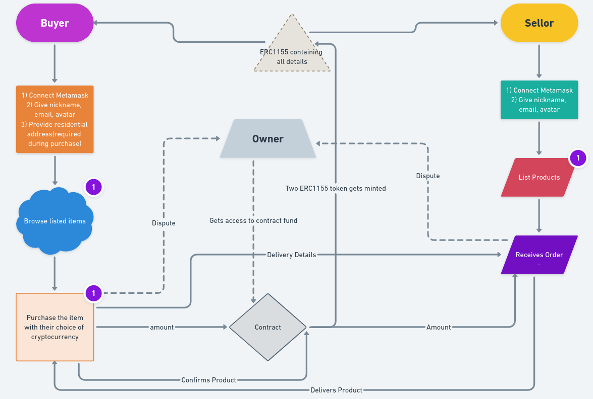

@BuyOnchain
@BuyOnchain BuyOnChain is a non-custodial protocol that permits users to buy and sell products or services through a decentralised platform that connects on-chain and off- chain. The protocol wants to create a safe marketplace for products and services. We also want to only require the minimum of information to guarantee safety for users.
Marketplaces on the internet like Amazon, Facebook Marketplace or Fiverr for
services have millions of users every day. They act as middlemen between sellers and
buyers and take a percentage of each transaction.
For example, Amazon takes 8% to 15% on each product sale. Moreover, sellers
don't receive the payment of their work instantly, they're paid every 15 days, like if
Amazon was their employer. For Fiverr, the platform charges you 2$ for every
transaction under 50$ (including tips). All other payments are charged by 5.5%.
People are losing at least 5% of their profits. The protocol is a non-custodial
platform, that means there is no fee.
As a decentralised marketplace, BuyOnChain doesn't act as a middle-man who
charges fees for his own profits. It will be a platform that connects buyers and sellers
and guarantees safety for every exchange.
We are also having our native token OnChain(BUY) and if the buyer chooses to use our native currency
to make transaction, they will get certain incentives. Each user has to stake a certain
amount of our native token that will be added to an insurance pool, which will be used by the protocol
in cases where a refund will be needed. These tokens are here to prevent spam and to make sure that sellers aren't
here to sell fake products to customers as well as the buyer doesn't play wrong, in case
of scams this stake can be liquidated to refund buyers/sellers. These funds can be withdrawn
at any time until the seller or buyer doesn't have any transaction in process.
These funds will also generate yield during the staking period.
To be able to sell products on the platform, sellers need to add their mail
address and connect with an Ethereum wallet. The buyer also has to provide their delivery
address before purchase of any products.
Sellers can list their products on the platform. They receive a notification from the contract that represents their listed product (Proof of Listing). Anyone can see every listed product, when someone buys one (or some) product, the seller receives a mail to inform him that somebody bought his product and all shipping information. Seller did not receive the payment directly, it's stored on the contract until the buyer receives the product, the contract is the escrow. Seller now have buyer's information (address and names for delivery) and can ship the buyer's product. Then the seller had to send the tracking number to oracle (this can be done directly on the dashboard), also the notification (Proof of Listing) is changed by a new (Proof of Shipping). Once the package is shipped to the buyer's address, buyer needs to confirm they received the package to allow seller to claim the payment. After the payment is processed, two ERC-1155 NFT (Proof of buying/selling) gets minted. These NFTs will contain all the information regarding that transaction. One of the NFT will go to the buyer's address and the other to the seller's address. These NFTs will give access to buyers and sellers to give ratings and reviews about the products and services.
Buyers can browse every product listed on the platform. When they buy a product, the buyer needs to add his address and name for delivery. These informations are stored on IPFS and only available to the seller after the purchase. The payment can be done with any ERC-20 token(price*quantity). Then the buyer receives a notification that represents his purchase (Proof of Buying). On the other side, seller receive the information that someone placed an order and information for shipping. The seller can either accept the order or reject it. In case of rejection the amount that is paid by the buyer in the contract will automatically go back to him/her.
The rating system of the platform will be very important. It will work with the NFTs that sellers and buyers receive. The seller's NFT "Proof of Delivered" will allow sellers to be rated, but to be allowed to rate, buyers need to have the NFT "receipt". With this system, both sellers and buyers can be rated. The rating system will provide important informations on sellers and products. To make the buyer's rate benefit for them, they will be rewarded by a cashback in our native token or a discount on their next purchase. The sellers can also rate the buyers on the basis of how fast they have processed the payment. This will allow more sellers willing to sell them. This system will be helpful for everyone, good sellers will receive good remarks and will be more attractive for buyers. In this way scammers can be prevented.
To prevent frauds, we will try mechanisms that make frauds and scams inefficacious. First of all, sellers will need to stake OnChain(BUY) native token to be allowed to list products. Also in case of scam or fraud, the stake amount will be liquidated to give refund. This stake can be withdrawn at any time if the seller doesn't have any sales in process. An oracle (Chainlink) will provide off-chain information to the contract. This will prevent fake reclamations and fake delivery. We will be sure that the package has arrived (or not). Our escrow payment is a smart contract that stores the buyer's payment until the package is delivered to his address. Like this, sellers are paid after so we can be sure that the package is delivered. This system prevents sellers from being scammers. Also the buyers has to stake a certain amount of our native token before purchase of any goods. They have to confirm the delivery within a certain time period after the package being delivered. Failed to do so will cost penalty from the staking fund. In case of dispute both the parties have the right to raise a dispute. When anyone of them will raise a dispute, we as a owner of this marketplace will get access to the contract funds. We will then mediate and decide who is right (or wrong). We will then direct the fund stored in the contract to that address.
To conclude, we just want to say that BuyOnChain wants to become the best place for sellers and buyers. Protocols will use escrow, ERC-1155, NFTs and oracles. A safe and secure place that will benefit everyone.
@BuyOnchain